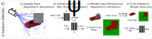
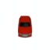
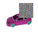

RANRAC: Robust Neural Scene Representations via Random Ray Consensus arXiv Preprint
-
Benno Buschmann
TU Delft -
Andreea Dogaru
FAU Erlangen-Nürnberg -
Elmar Eisemann
TU Delft -
Michael Weinmann
TU Delft -
Bernhard Egger
FAU Erlangen-Nürnberg

Video
Abstract
We introduce RANRAC, a robust reconstruction algorithm for 3D objects handling occluded and distracted images, which is a particularly challenging scenario that prior robust reconstruction methods cannot deal with. Our solution supports single-shot reconstruction by involving light-field networks, and is also applicable to photo-realistic, robust, multi-view reconstruction from real-world images based on neural radiance fields. While the algorithm imposes certain limitations on the scene representation and, thereby, the supported scene types, it reliably detects and excludes inconsistent perspectives, resulting in clean images without floating artifacts. Our solution is based on a fuzzy adaption of the random sample consensus paradigm, enabling its application to large scale models. We interpret the minimal number of samples to determine the model parameters as a tunable hyperparameter. This is applicable, as a cleaner set of samples improves reconstruction quality. Further, this procedure also handles outliers. Especially for conditioned models, it can result in the same local minimum in the latent space as would be obtained with a completely clean set. We report significant improvements for novel-view synthesis in occluded scenarios, of up to 8dB PSNR compared to the baseline.
Pipeline
Overview of our robust reconstruction pipeline with RANRAC applied to light field networks [Sitzmann 2021].
The RANRAC algorithm for LFNs samples random hypotheses by selecting a set of random samples from the given perspective (a), and inferring the latent representation of these rays using the autodecoder of a pretrained LFN (b). The obtained light field is then used to predict an image from the input perspective (c). Based on this prediction, confidence in the random hypothesis is evaluated via the Euclidean distance between the predicted ray colors and the remaining color samples of the input image. The amount of samples which are explained by each hypothesis up to some margin are used to determine the best hypothesis (d). All samples explained by the selected hypothesis are used for a final inference with the LFN to obtain the final model and latent representation (e).

For the application to Neural Radiance Fields, enabling photo-realistic reconstruction from real-world data, the pipeline is adapted: The sampling takes place in image space and the evaluation becomes a two-step process.
RANRAC applied to Light Field Networks
With the application of RANRAC to light field networks [Sitzmann 2021] we enable reconstruction from a single occluded input perspective.
| Occlusion | Input | LFN | RANRAC (Ours) | Ground Truth | Consensus Set |
|---|---|---|---|---|---|
| 0% |  |
||||
| 5% |  |  |
|||
| 15% |  |
||||
| 25% |  |
||||
| 35% |  |
||||
| 45% |  |
RANRAC enables single-shot multi-class reconstruction from occluded input perspectives.
| Input | LFN | RANRAC (Ours) | Ground Truth |
|---|---|---|---|
|  | |||
 |
|||
 |
RANRAC applied to Neural Radiance Fields
RANRAC removes the artifacts caused by occlusions (left) in NeRF reconstructions [Mildenhall 2020, Müller 2022]. Compared to robustNeRF [Sabour 2023], more details are preserved in the reconstruction (right).Minor artifacts are best observable when taking a detailed look at individual frames. The inaccuracies RobustNeRF shows compared to RANRAC appear mostly at concavities.
Citation
Acknowledgements
The authors thank everyone involved with the project. The website template was sourced from VET, who adapted from Zip-NeRF, who borrowed from Michaël Gharbi and Ref-NeRF. Image sliders are from BakedSDF.
References
[Sitzmann 2021] Vincent Sitzmann, Semon Rezchikov, William T. Freeman, Joshua B. Tenenbaum, and Fredo Durand. "Light Field Networks: Neural Scene Representations with Single-Evaluation Rendering." NeurIPS (2021)
[Sabour 2023] Sara Sabour, Suhani Vora, Daniel Duckworth, Ivan Krasin, David J. Fleet, and Andrea Tagliasacchi. "RobustNeRF: Ignoring Distractors With Robust Losses." CVPR (2023)
[Mildenhall 2020] Ben Mildenhall, Pratul P. Srinivasan, Matthew Tancik, Jonathan T. Barron, Ravi Ramamoorthi, and Ren Ng. "NeRF: Representing Scenes as Neural Radiance Fields for View Synthesis." ECCV (2020)
[Müller 2022] Thomas Müller, Alex Evans, Christoph Schied, and Alexander Keller. "Instant neural graphics primitives with a multiresolution hash encoding." SIGGRAPH (2022)
[Fischler 1981] Martin A Fischler and Robert C Bolles. "Random sample consensus: a paradigm for model fitting with applications to image analysis and automated cartography." Communications of the ACM, 24(6):381–395 (1981)